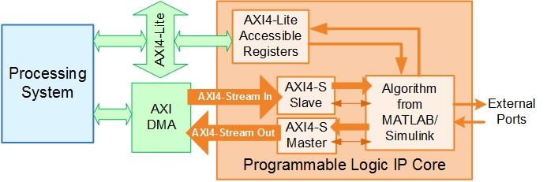
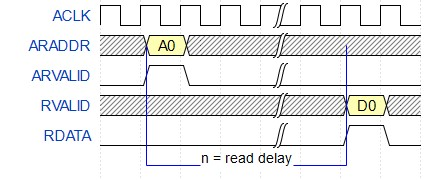
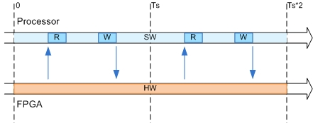

| IP core name | Modulatio_ip |
| IP core version | 1.0 |
| IP core folder | E:\AMC_Projects\deployModule\AMCMatlab\hdl\ipcore\Modulatio_ip_v1_0 |
| IP core zip file name | Modulatio_ip_v1_0.zip |
| Target platform | Xilinx Zynq UltraScale+ RFSoC ZCU111 Evaluation Kit |
| Target tool | Xilinx Vivado |
| Target language | Verilog |
| Reference Design | Deep Learning design with I/Q DAC/ADC and real-time interfaces |
| Model | soc_dlmc_rfsoc_zcu111 |
| Model version | 10.2 |
| HDL Coder version | 25.2 |
| IP core generated on | 04-Nov-2026 12:58:32 |
| IP core generated for | Modulation Classification DUT |
| Port Name | Port Type | Data Type | Target Platform Interfaces | Interface Mapping | Interface Options |
| soc_dlmc_rfsoc_zcu111/Modulation Classification DUT/DUTProcstart | Inport | boolean | AXI4-Lite | x"100" | |
| soc_dlmc_rfsoc_zcu111/Modulation Classification DUT/AXIWriteCtrlInDDR | Inport | bus | Deep Learning I/O memory Write | Write Slave to Master Bus | |
| soc_dlmc_rfsoc_zcu111/Modulation Classification DUT/AXIReadDataDL | Inport | uint32 | Deep Learning interface Read | Data | |
| soc_dlmc_rfsoc_zcu111/Modulation Classification DUT/AXIReadCtrlInDL | Inport | bus | Deep Learning interface Read | Read Slave to Master Bus | |
| soc_dlmc_rfsoc_zcu111/Modulation Classification DUT/AXIWriteCtrlInDL | Inport | bus | Deep Learning interface Write | Write Slave to Master Bus | |
| soc_dlmc_rfsoc_zcu111/Modulation Classification DUT/ADC Tile 0 Ch0 I Data | Inport | int16 | RFDC ADC Tile0 Ch0 IData [0:15] | [0:15] | |
| soc_dlmc_rfsoc_zcu111/Modulation Classification DUT/ADC Tile 0 Ch0 Q Data | Inport | int16 | RFDC ADC Tile0 Ch0 QData [0:15] | [0:15] | |
| soc_dlmc_rfsoc_zcu111/Modulation Classification DUT/ADC Tile 0 Ch0 Valid | Inport | boolean | RFDC ADC Tile0 Ch0 Valid | [0] | |
| soc_dlmc_rfsoc_zcu111/Modulation Classification DUT/NCO Phase Incr | Inport | uint16 | AXI4-Lite | x"104" | |
| soc_dlmc_rfsoc_zcu111/Modulation Classification DUT/Frame Size | Inport | uint32 | AXI4-Lite | x"108" | |
| soc_dlmc_rfsoc_zcu111/Modulation Classification DUT/Trigger Capture | Inport | boolean | AXI4-Lite | x"10C" | |
| soc_dlmc_rfsoc_zcu111/Modulation Classification DUT/Stream Enable | Inport | boolean | AXI4-Lite | x"114" | |
| soc_dlmc_rfsoc_zcu111/Modulation Classification DUT/Ready | Inport | boolean | AXI4-Lite | x"128" | |
| soc_dlmc_rfsoc_zcu111/Modulation Classification DUT/txEnable | Inport | boolean | AXI4-Lite | x"110" | |
| soc_dlmc_rfsoc_zcu111/Modulation Classification DUT/mod Test Signal Sel | Inport | uint32 | AXI4-Lite | x"120" | |
| soc_dlmc_rfsoc_zcu111/Modulation Classification DUT/AXIReadCtrlInDDR | Inport | bus | Deep Learning I/O memory Read | Read Slave to Master Bus | |
| soc_dlmc_rfsoc_zcu111/Modulation Classification DUT/AXIReadDataDDR | Inport | ufix128 | Deep Learning I/O memory Read | Data | |
| soc_dlmc_rfsoc_zcu111/Modulation Classification DUT/AXIReadCtrlOutDL | Outport | bus | Deep Learning interface Read | Read Master to Slave Bus | |
| soc_dlmc_rfsoc_zcu111/Modulation Classification DUT/AXIWriteDataDL | Outport | uint32 | Deep Learning interface Write | Data | |
| soc_dlmc_rfsoc_zcu111/Modulation Classification DUT/AXIWriteCtrlOutDL | Outport | bus | Deep Learning interface Write | Write Master to Slave Bus | |
| soc_dlmc_rfsoc_zcu111/Modulation Classification DUT/AXIWriteCtrlOutDDR | Outport | bus | Deep Learning I/O memory Write | Write Master to Slave Bus | |
| soc_dlmc_rfsoc_zcu111/Modulation Classification DUT/AXIWriteDataDDR | Outport | ufix128 | Deep Learning I/O memory Write | Data | |
| soc_dlmc_rfsoc_zcu111/Modulation Classification DUT/AXIReadCtrlOutDDR | Outport | bus | Deep Learning I/O memory Read | Read Master to Slave Bus | |
| soc_dlmc_rfsoc_zcu111/Modulation Classification DUT/DAC Tile 1 Ch2 I Data | Outport | int16 | RFDC DAC Tile1 Ch2 IData [0:15] | [0:15] | |
| soc_dlmc_rfsoc_zcu111/Modulation Classification DUT/DAC Tile 1 Ch2 Q Data | Outport | int16 | RFDC DAC Tile1 Ch2 QData [0:15] | [0:15] | |
| soc_dlmc_rfsoc_zcu111/Modulation Classification DUT/DAC Tile 1 Ch2 Valid | Outport | boolean | RFDC DAC Tile1 Ch2 Valid | [0] | |
| soc_dlmc_rfsoc_zcu111/Modulation Classification DUT/Valid | Outport | boolean | AXI Stream to Software Master | Valid | |
| soc_dlmc_rfsoc_zcu111/Modulation Classification DUT/Captured Data | Outport | uint32 | AXI Stream to Software Master | Data | |
| soc_dlmc_rfsoc_zcu111/Modulation Classification DUT/FIFO Almost Full Count | Outport | uint32 | AXI4-Lite | x"124" |
| Register Name | Address Offset | Description |
| IPCore_Reset | 0x0 | write 0x1 to bit 0 to reset IP core |
| IPCore_Enable | 0x4 | enabled (by default) when bit 0 is 0x1 |
| Deep_Learning_interface_Rd_BaseAddr | 0x8 | Base Address offset for Deep Learning interface Read (Default Base Address: hex2dec(A0060000)) |
| Deep_Learning_interface_Wr_BaseAddr | 0xC | Base Address offset for Deep Learning interface Write (Default Base Address: hex2dec(A0060000)) |
| Deep_Learning_I_O_memory_Rd_BaseAddr | 0x10 | Base Address offset for Deep Learning I/O memory Read (Default Base Address: hex2dec(80000000)) |
| Deep_Learning_I_O_memory_Wr_BaseAddr | 0x14 | Base Address offset for Deep Learning I/O memory Write (Default Base Address: hex2dec(80000000)) |
| IPCore_PacketSize_AXI_Stream_to_Software_Master | 0x18 | Packet size for AXI Stream to Software Master interface, the default value is 1024. The TLAST output signal of the AXI Stream to Software Master interface is generated based on the packet size. |
| IPCore_Timestamp | 0x1C | contains unique IP timestamp (yymmddHHMM): 2611041258 |
| DUTProcstart_Data | 0x100 | data register for Inport DUTProcstart |
| NCO_Phase_Incr_Data | 0x104 | data register for Inport NCO Phase Incr |
| Frame_Size_Data | 0x108 | data register for Inport Frame Size |
| Trigger_Capture_Data | 0x10C | data register for Inport Trigger Capture |
| txEnable_Data | 0x110 | data register for Inport txEnable |
| Stream_Enable_Data | 0x114 | data register for Inport Stream Enable |
| mod_Test_Signal_Sel_Data | 0x120 | data register for Inport mod Test Signal Sel |
| FIFO_Almost_Full_Count_Data | 0x124 | data register for Outport FIFO Almost Full Count |
| Ready_Data | 0x128 | data register for Inport Ready |


